TPD / PROTAC 5T35 case: BRD4-MZ1-VHL ternary complex
This case shows a complete DeepTernary PROTAC workflow in the Example project using the public PDB 5T35 system. 5T35 is the crystal structure of MZ1 bound to BRD4 BD2 and the VHL:EloB:EloC E3 complex at 2.70 Å resolution, making it a suitable teaching system for ternary-complex modeling.
References:
- RCSB PDB:
5T35, The PROTAC MZ1 in complex with the second bromodomain of Brd4 and pVHL:ElonginC:ElonginB, DOI10.2210/pdb5T35/pdb. - Gadd et al., Nature Chemical Biology 2017: Structural basis of PROTAC cooperative recognition for selective protein degradation, DOI
10.1038/nchembio.2329. - DeepTernary official example inputs:
output/protac22/5T35_H_E_759/.
1. Prepare the model
Open Model Zoo from the top navigation and confirm that the DeepTernary card is ready. If it is not ready, click "Download model". If it is already ready, a normal user's "Check status" action only refreshes state and does not force a re-download.
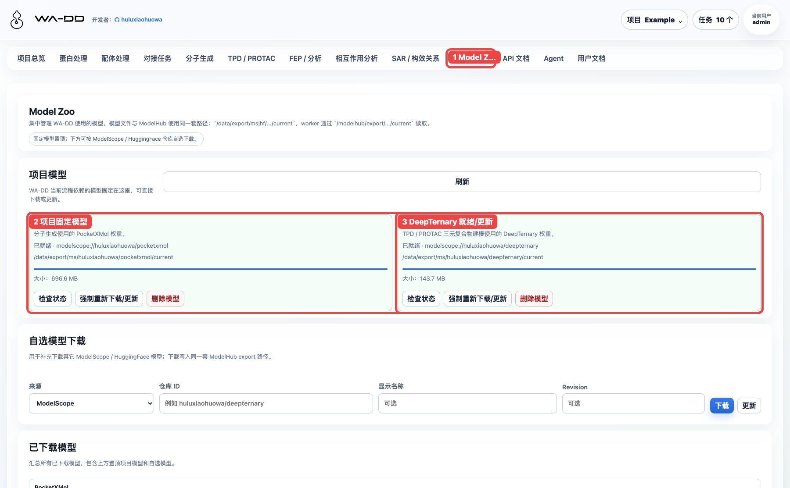
2. Prepare the 5T35 input assets
The recommended path is to import the seven pre-split files from the official example. This is clearer and avoids asking users to manually identify components from the full complex.
For manual UI operation:
- Upload
unbound_protein1.pdb,unbound_protein2.pdb, and optionalcomplex.pdbin Protein Processing. They become protein or complex structure assets. - Upload
ligand.pdb,unbound_lig1.pdb, andunbound_lig2.pdbin Ligand Processing. The TPD page reuses them as ligand or mask PDB assets. - If starting from the full complex, open the structure in Protein Processing, locate the HETATM ligand component in 3D, and generate the required TPD PDB assets from the component tools.
| Asset | File | Type | Use in TPD page |
|---|---|---|---|
| BRD4 BD2 POI | unbound_protein1.pdb |
protein | POI protein |
| VHL E3 complex | unbound_protein2.pdb |
complex | E3 protein |
| MZ1 degrader | ligand.pdb |
ligand | degrader ligand |
| POI binary ligand | unbound_lig1.pdb |
ligand | POI binary ligand PDB |
| E3 binary ligand | unbound_lig2.pdb |
ligand | E3 binary ligand PDB |
| POI mask | unbound_lig1.pdb |
ligand | POI ligand mask PDB |
| E3 mask | unbound_lig2.pdb |
ligand | E3 ligand mask PDB |
Notes:
- A binary ligand is the anchor or warhead small-molecule PDB from a binary structure.
- A mask PDB tells DeepTernary how to align each side of the full PROTAC to the corresponding anchor atoms. In this case, the mask and binary ligand use the same PDB file on each side.
- If you start from a full complex, upload
complex.pdbin the Protein Processing page, preview it, locate the ligand component, and generate a TPD PDB asset from the component selector. For this tutorial, the pre-split files are the primary path.
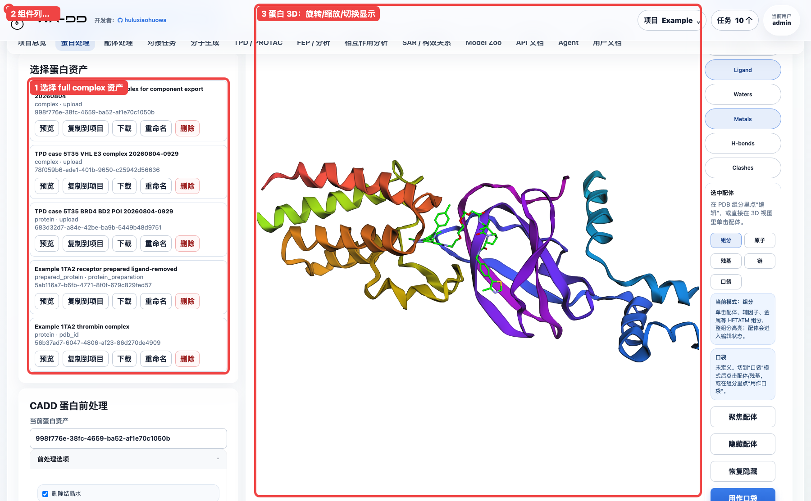
Ligand assets are grouped by source. The MZ1, binary ligand, and mask assets used by TPD should be visible in the Ligand Processing page and can be copied, downloaded, or reused downstream.
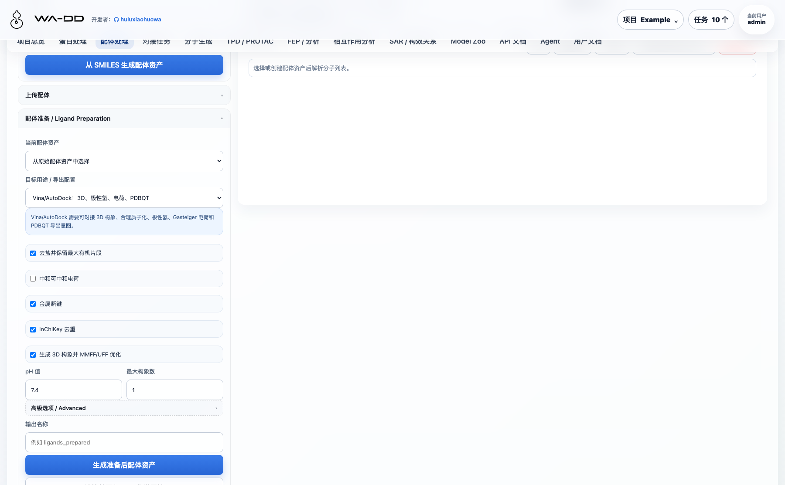
3. Select the primary TPD inputs
Open TPD / PROTAC from the top navigation and fill the primary inputs:
- Task type: select
PROTAC. - POI: select
TPD case 5T35 BRD4 BD2 POI .... - E3: select
TPD case 5T35 VHL E3 complex .... - Degrader: select
TPD case 5T35 MZ1 degrader .... - Model status: confirm that DeepTernary is ready.
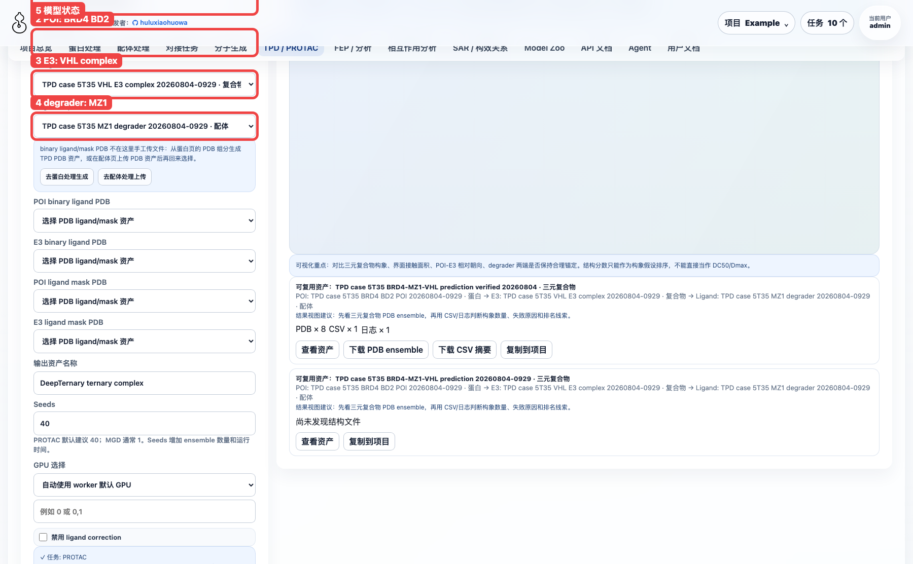
4. Select PROTAC auxiliary inputs and parameters
Continue with the PROTAC-specific inputs:
- POI binary ligand PDB: select
TPD case 5T35 POI binary ligand PDB .... - E3 binary ligand PDB: select
TPD case 5T35 E3 binary ligand PDB .... - POI ligand mask PDB: select
TPD case 5T35 POI mask PDB .... - E3 ligand mask PDB: select
TPD case 5T35 E3 mask PDB .... - Output asset name: use a system-specific name such as
TPD case 5T35 BRD4-MZ1-VHL prediction verified 20260804. - Seeds: this case uses
8. The production default is40; more seeds produce a larger ensemble and take longer. - GPU: keep "Auto / worker default GPU".
- Disable ligand correction: leave unchecked. Only check it if the ligand coordinates are already known to be suitable and you do not want DeepTernary correction.
- Click "Submit DeepTernary task".
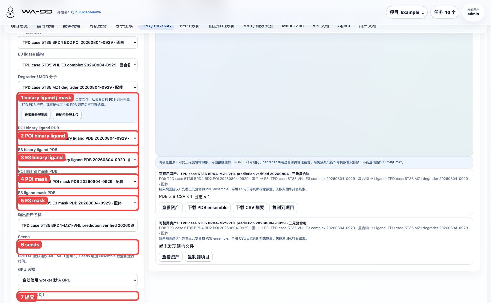
Before submission, check the input asset chain. It should show POI, E3, ligand, and all four PROTAC auxiliary PDB inputs.
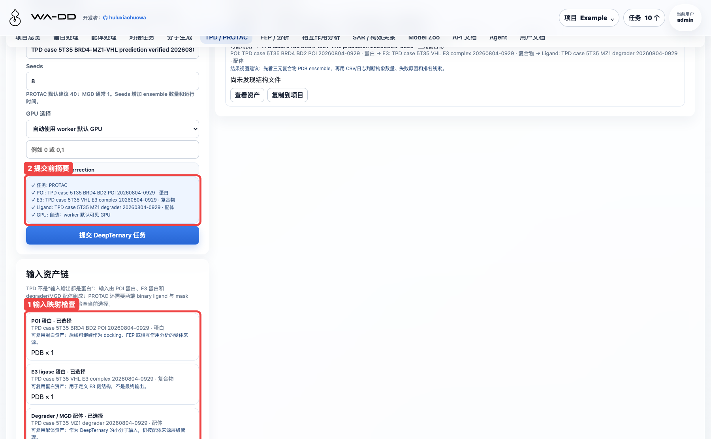
5. Inspect task status
After submission, the job appears in the TPD page's task/result area and in the task center. The final status should be completed.
The verified case produced:
- 8
complex_pred_*.pdbfiles. - 1
summary_*.csvfile. - 1
deepternary_stdout.logfile.
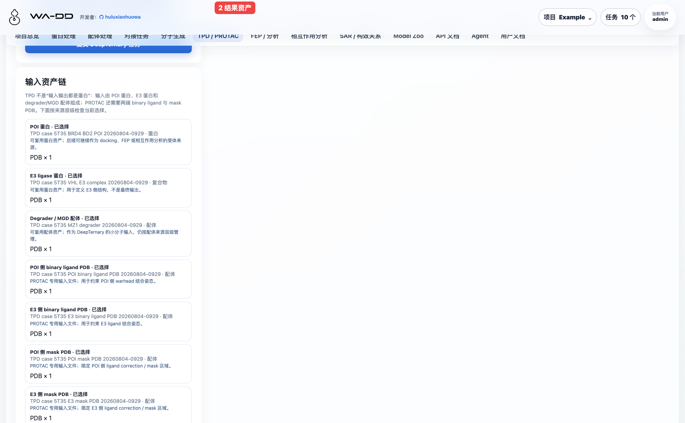
6. Inspect results and rank candidates
The output asset is a ternary_complex, not a standalone protein or ligand. Recommended inspection order:
- Check the result asset chain and confirm the 5T35 POI, E3, and ligand inputs.
- Download the PDB ensemble and inspect the relative BRD4, VHL, and MZ1 pose in a 3D viewer.
- Download the CSV summary and screen candidates by
pred_p2_rmsdandclash_ratio. - For interface interpretation, send the PDB ensemble or a selected PDB to Interaction Analysis as a complex asset.
In this 8-seed run, seed 7 ranked near the top with pred_p2_rmsd ≈ 1.438 and clash_ratio ≈ 0.035. These values are structural ranking hints only; they are not DC50, Dmax, or degradation-activity predictions.
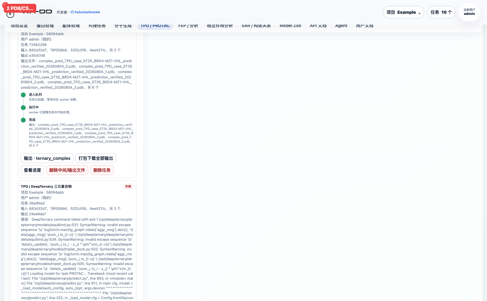
7. Interaction experience notes
This case recommends the "pre-split asset upload → TPD page selection" path because:
- The POI, E3, degrader, binary ligand, and mask source chain is explicit.
- The TPD page keeps input and result chains together for review.
- The output is a reusable
ternary_complexasset that can move into Interaction Analysis.
Starting from a full complex requires locating, focusing, and exporting components in Protein Processing. That path is useful as a supplement, but it requires the user to know which HETATM component corresponds to the POI warhead or E3 ligand. It is not the main path for this beginner case.
8. Output asset hierarchy
DeepTernary output is not a normal protein and not a normal ligand. It is a ternary_complex structural complex asset. The UI manages it in three layers:
- Task source layer: for example
DeepTernary job · 73462298, used to identify which computation produced the output. - Asset layer: for example
TPD case 5T35 BRD4-MZ1-VHL prediction verified 20260804, the reusable asset that downstream workflows should reference. - Individual layer: individual PDB, CSV, and log files inside the asset. A PDB individual can be single-selected and rendered in the TPD ternary-complex 3D viewer; multiple individuals can be selected for batch file operations.
In TPD / PROTAC → Ternary complex, the DeepTernary output asset selector lists only ternary_complex outputs. Selecting an asset renders the first PDB individual by default. In Output assets, expand the task source, asset, and individual file layers to single-select or multi-select output files.
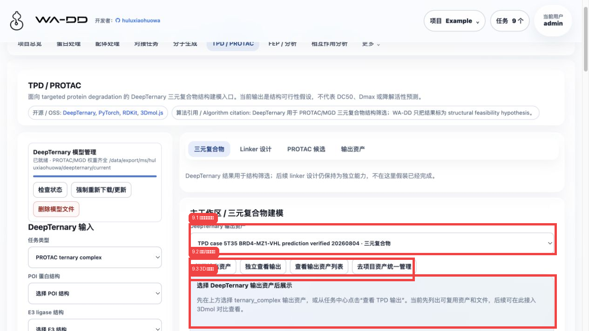
Click Independent output view to open the dedicated TPD output viewer. The left column is the individual file layer for PDB/CSV/log files inside the asset, the center column is the 3D structure viewer, and the right column lists chains and HETATM components. A PDB individual can be opened with Render/locate; checkboxes are for multi-select batch download. Chain and component Locate buttons move the 3D view directly to the chosen object.
In Output assets, outputs are shown as task source → ternary_complex asset → individual files. This view is better for checking a whole PDB ensemble and downloading the CSV summary or logs. When one PDB is selected or rendered, it is synchronized to the ternary-complex 3D viewer above.
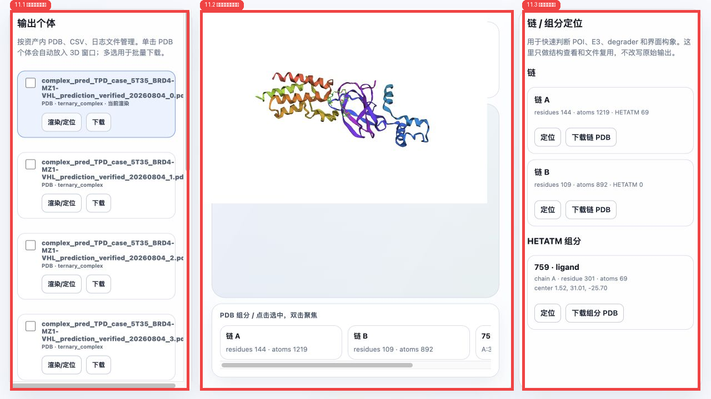
The same ternary_complex asset also appears under Protein Processing → Structure assets in a separate TPD output / ternary complex source layer. Click "Structure preview" to load its PDB into the Protein 3D viewer; the focused editor can then inspect chains, components, ligands, metals, waters, surfaces, and other structure elements. This lets TPD output be reused as a structural complex without mixing it into the POI/E3 input selectors.
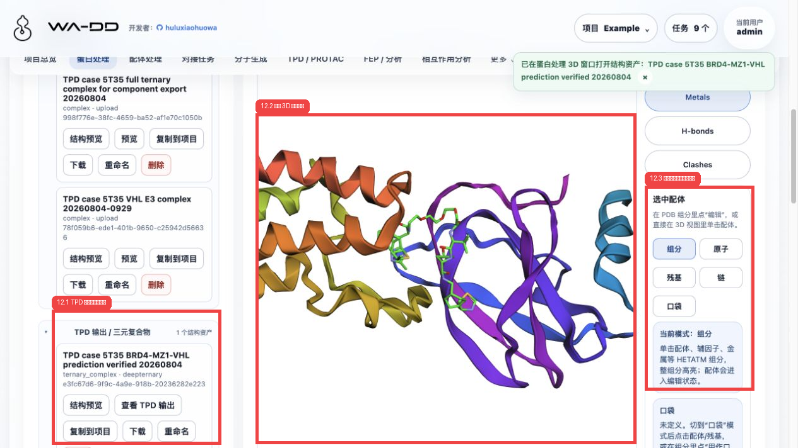
The task-center View TPD output button is an entry point only: it closes the task popover, switches to the TPD page, and selects the corresponding output asset. Do not inspect the full output list inside the task popover because it would cover the main workspace.
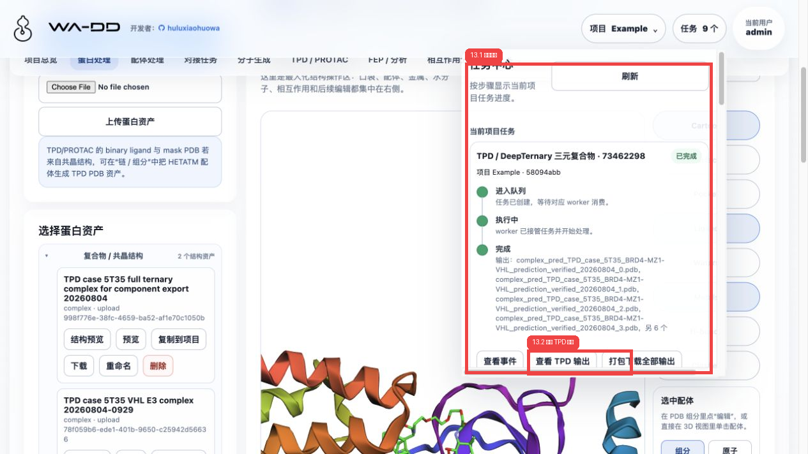